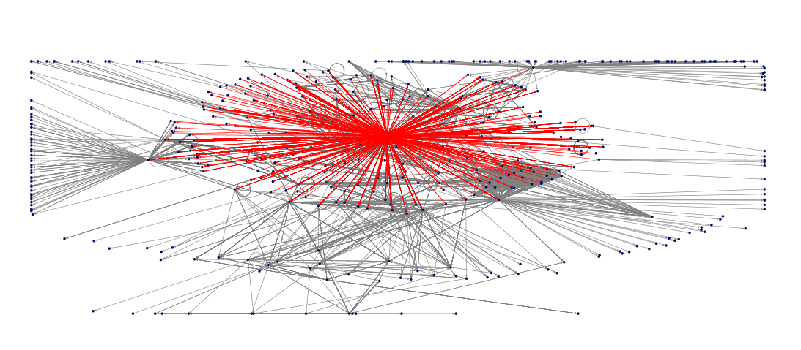

Name: Mostafa Uddin
Plug-in installation
In this HW4, I use the NodeXL plug-in for Microsoft Excel to generate the network based on my email address (muddin@cs.odu.edu). In order to use the plug-in, I save the downloaded .dll file in the "PlugIns" folder. Finally, I restart the NodeXL Execel Template file to use the Microsoft Excel plugins.
Interesting Facts
Settings and Data
I use the above settings to extract the data using NodeXL. The data contains 8265 edges between 475 vertices. Each vertices represents an email address. It is noted that all vertices are not unique, some email addresses were repeated multiple times.

Number One:
The above network shows the people to whom I have contacted with, and who also have contacted me. In the network, the center point shows the position of my email address. The interesting thing about this network is that the person who are closer to me is shown nearer to the center. Also the the person who are not closer are shown at peripheral.
Number Two:
The above graph shows my email network in a different way. I like this network, because it shows the pattern or flow of my interaction with different people in email. The source node of all red line represent my email address. I find it interesting that I have interacted with number of people.
Number Three:
The interesting part in the above network is the loop . All those node that has loop is related to some conferences where I submitted my papers or posters or demo. Some of the nodes are related to EDAS conference website or some automatic email from program chair.
Critique
I like the tool NodeXL, how it generates the social network from Facebook, twitter or email account. Some part of the generated network provides a meaningful insight of the actual social interaction of a people. It also provides number of features and additional information about the network in excel table. However, I feel that, NodeXL require many improvement on visualizing the network. Specially, I feel their is not much option in clustering the vertices in the network. Besides from the visualization, we can not say, how often i have interacted with one person. It also does not show, who are the person i have interacted with recently.
The NodeXL also shows a subgraph of each vertices. The subgraph provide detail interaction between diferrent vertices. It also shows some statistical measurement for each vertices like Eigenvector Centrality, Page Rank, Clustering Co-efficient etc. It also made groups of vertices based on attributes or clustering. However, I find the result of the clustering useless in my social network.